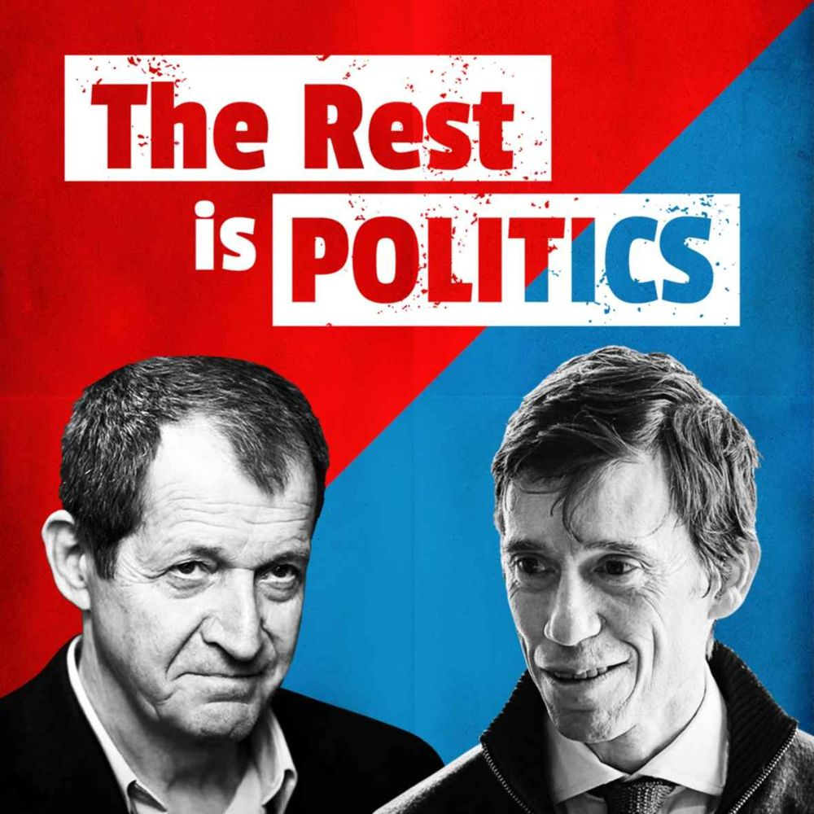

Good morning

The Rest is History
BBC News
Easy German: Learn German with Native Speakers
The History of Literature

Very Bad Wizards

The New York Times Daily
UK Politics - what's happening?

Newscast
BBC Radio

Politics Weekly UK
The Guardian
Coffee House Shots
The Spectator
The NS Podcast
The New Statesman

Political Thinking
BBC Radio 4

The Rest is Politics
Goalhanger Podcasts